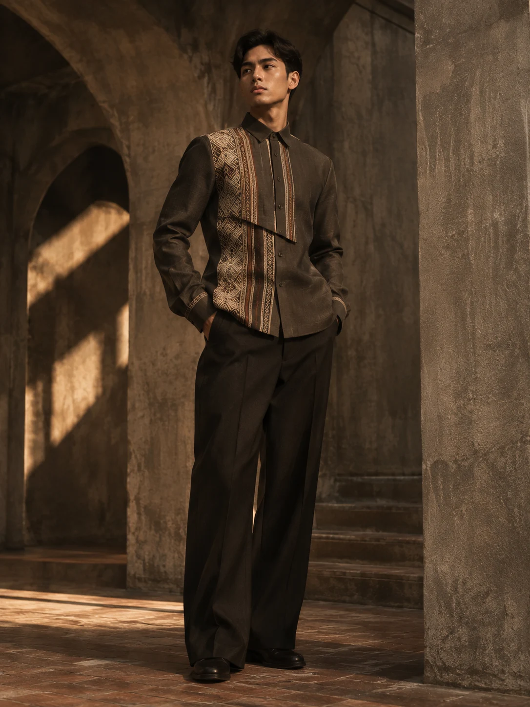
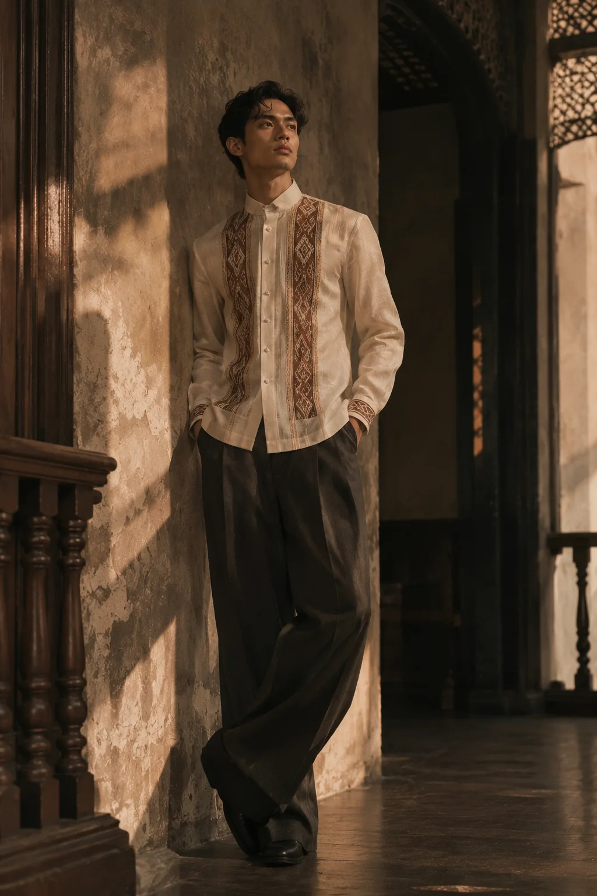
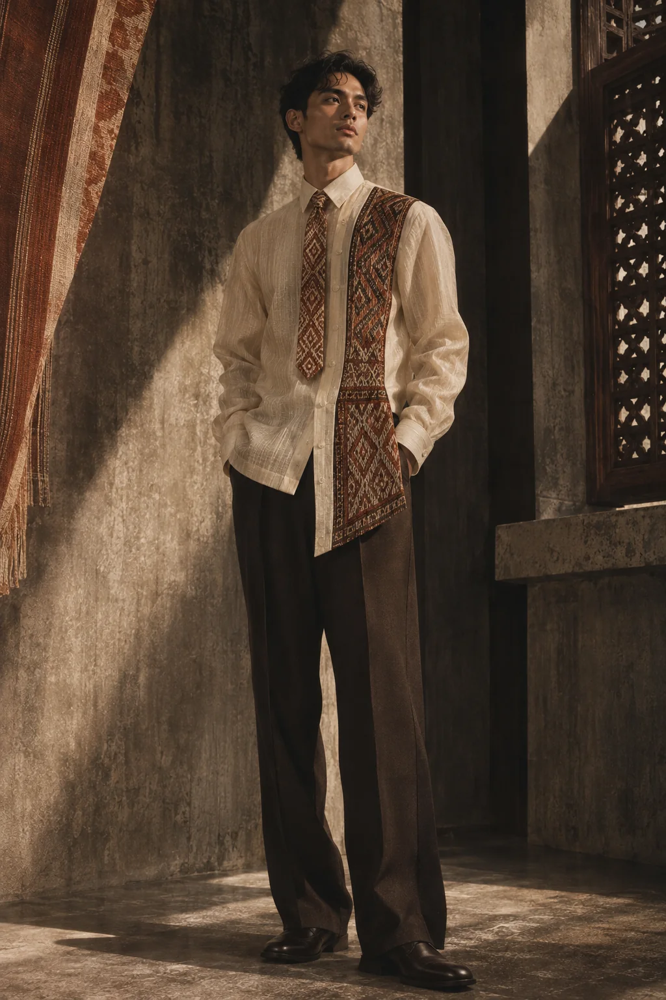

Community dialogue
Identify a willing weaving group and learn about cultural boundaries, permissions and capabilities.
START WHERE
YOU'RE FROM.
WE BEGIN WITH A QUESTION
Culture isn't something we leave behind to move forward.
SIMULA is an accessible-premium Filipino fashion label reconnecting younger Filipinos with the country's weaving traditions through contemporary barong design. Our first audience: Metro Manila graduates and young professionals, aged 21–25, dressing for the beginnings that matter.

THE DISCONNECT
The barong is familiar. The stories woven into our clothing can feel distant.
OUR FIRST GENERATION
A new generation. A new relationship with what we wear.
SIX WAYS TO BEGIN
Six ready-to-wear design directions. Three everyday and occasion-ready signatures; three more exploratory expressions. Select a look to enter its garment dossier, see details, and save it to your personal lookbook.

COLLECTION 001 / DESIGN ARCHIVEThe opening statement.
YOUR EDITOR'S SELECTION
Curate your own selection from Collection 001. Save the looks that speak to you.
Discover six interpretations of contemporary Filipino formalwear, each designed for a different beginning.
MORE THAN AN ORNAMENT
Collection 001 begins with the Cordillera: a region of distinct weaving communities, histories and artistic practices. Our approach starts with relationships, listening and thoughtful co-creation—not simply borrowing patterns.
We envision commissioned, community-specific textile accents developed together with weaving partners. Fair compensation, meaningful attribution and mutually agreed design rights are central to every collaboration. Our exclusivity comes from new creative work—not ownership of inherited motifs.

DESIGN STUDY / HABI, COLLECTION 001
THE TEXTILE-TO-GARMENT JOURNEY
A collaboration-led approach from first conversation to final garment.
Identify a willing weaving group and learn about cultural boundaries, permissions and capabilities.
Negotiate original designs, artisan fees, attribution, usage terms and production volume.
Source textile accents, prototype garments and check comfort, durability and quality.
Label verified textile origins and explain the collaborators' contributions with permission.
“A motif can be copied. A relationship has to be built.”DESIGN BEGINS WITH RELATIONSHIPS
DIRECT TO CUSTOMER / SMALL-BATCH READY-TO-WEAR
Ready-to-wear contemporary barongs with breathable cotton-linen foundations and a distinctive vision for community-commissioned textile accents.
Metro Manila consumers aged 21–25 seeking contemporary Filipino formalwear for important occasions.
Direct website discovery and ordering, supported by occasional graduation, design and cultural-event pop-ups for fittings and brand awareness.
Primary income from individual barong purchases; later opportunities for limited collaborations and coordinated accessories after feasibility testing.
FROM DISCOVERY TO DELIVERY
Editorial website, social content or event pop-up
Compare six designs, fit notes and intended occasions
Choose size and pay through a future real storefront
Dispatch from limited ready-to-wear inventory
Post-purchase care, feedback and future collections
A focused, small-batch range can offer predictable delivery and standard sizing, while limiting initial assortment complexity. Inventory still carries unsold-stock risk: SIMULA would start with conservative quantities, test fit and demand, then replenish based on sell-through.
A focused price range designed to bring considered Filipino formalwear within reach of young professionals.
A simple sales illustration: 30 pieces × ₱2,699 = ₱80,970 in gross revenue, before production and operating expenses.
A CATEGORY WITH ROOM FOR INTERPRETATION
Barongs are already sold across accessible retail, heritage specialty stores and designer fashion. SIMULA cannot win by claiming to invent affordable barongs. Its opportunity is a younger, design-led experience that makes textile provenance part of the garment's appeal.
Milestone-driven occasions provide recognizable reasons to purchase formalwear.
Ethically sourced handwoven accents may increase cost and complicate consistent ready-to-wear production.
Start with a focused collection, build lasting textile partnerships, and grow around the styles customers return to.
Different approaches to Filipino formalwear reveal SIMULA’s distinct place in the market.
Competitor descriptions highlight different brand emphases rather than exclusive capabilities.
Our edge is not a pattern. It is the system around it.
SIMULA brings together three elements in one coherent offer: contemporary design for a defined young customer, accessible-premium positioning, and ethically commissioned community-specific textile storytelling. The differentiation is in how these elements work together as one brand experience.
Our long-term strength is the relationship between design, community and the next generation of Filipino wearers.
A BRAND DESIGNED TO GROW WITH ITS PARTNERS
SIMULA begins with a Cordillera-focused creative direction. Future regional chapters will celebrate distinct weaving traditions through thoughtful collaboration, original design and proper attribution.
Build the first textile collaboration and shape the visual language of Pinagmulan.
Explore the rich character of inabel through a collection developed with Ilocos textile makers.
Explore the delicacy of piña in a collection shaped alongside Aklan artisans.
Interview prospective customers and test fit, styles and willingness to pay.
Secure community consent, fair commercial terms and textile provenance.
Test materials, sizing, textile placement and production cost.
Launch a limited ready-to-wear run online, with selective pop-ups.
For a generation entering the world on its own terms, heritage should not feel out of reach or out of date. SIMULA creates contemporary barongs for first milestones, bringing the vision of authentic, attributed weaving collaborations into a modern wardrobe. The commercial proposition is focused: six designs, one young audience, online-first ready-to-wear sales, and a price band that invites discovery. More than a garment, SIMULA offers a new way to carry our beginnings forward.
Further reading on Filipino formalwear, heritage and community rights.
Onésimus — official website ↗Kultura Filipino — official website ↗Barong Warehouse — official website ↗National Commission on Indigenous Peoples ↗Republic Act No. 8371 (IPRA) ↗SIMULA is a student fashion business concept. Garment images are AI-generated creative visualizations, not photographs of manufactured products or authenticated community textiles. Prices and operations illustrate the brand plan; artisan collaborations are envisioned, not yet contracted. This website is an editorial catalog and does not accept orders.
SIMULA’s creative approach centers direct community collaboration, permission, fair compensation, clear attribution and respect for collective cultural heritage.